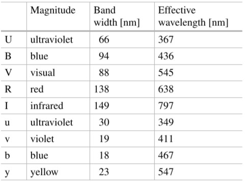
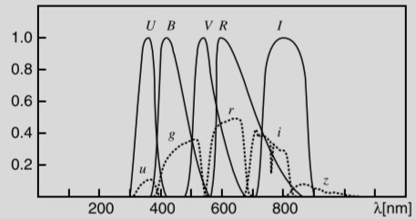

天文光度学
几个重要参数和概念
衡量光的强度使用的是能量$E$，衡量光单位时间内的强度用的是功率$P$。由于光不断在运动，恒星不断在产能，因此使用后者是较为合理的。
定义以下参数：
流量(flux): 单位$\text W$，指单位时间内某个面积流过的总能量。
流量密度(flux density) $F$: 单位$\text{W/m}^2$，即单位面积单位时间上流过的总能量。
光度(luminosity) $L$：即天文学上对恒星使用的流量，某些情境中可交替使用。
有时候单位中会有$\text{Hz}^{-1}$，这种情况指的是在某个不同频率的波段上的相应参数。
导出参数及关系
如果源是各向同性发射的，那么有一条关系式：
$$
L=4\pi r^2 F
$$
即众所周知的平方反比定律：

星等
历史
公元前二世纪，Hipparchos定义了一套星等系统：将天上所有可见的星分为六等，最明亮的为一等星，勉强可见的最暗星为六等星。
这个定义十分的不准确，因此到了1856年，Norman R. Pogson定义了一套全新的系统，这就是现在的星等系统。
原理及推导
人眼对光的响应是对数的。假如有三颗星，它们的流量密度之比为1:10:100，人眼就会感觉一二颗星及二三颗星之间的差别是相等的。即每降一个星等，星的流量密度就要乘一个倍数，这是一个对数运算。
利用这个特性，我们可以定义一等星与六等星的流量密度之比为100。那么对于人眼来说，n比n+1等要亮$\sqrt[5]{100}=2.512$等。那么：
$$
\frac{F_n}{F_{n+1}}=\sqrt[5]{100}\Rightarrow\lg\frac{F_n}{F_{n+1}}=2/5\Rightarrow-2.5\lg\frac{F_n}{F_{n+1}}=-1=n-(n+1)
$$
即假设星等和对应流量密度$m_1,F_1,m_2,F_2$，则有普森（Pogson）公式：
$$
m_1-m_2=-2.5\lg\frac{F_1}{F_2}
$$
有时候为便运算，可定义零等星对应的流量密度为$F_0$，则任意星等$m$及对应流量密度$F$的定义式为：
$$
m=-2.5\lg \frac{F}{F_0}
$$
星等系统
星等可以代表不同波段上的光的强度。如我们可以定义眼睛看到的星等为$m_V$，摄像机拍到的星等为$m_{\text{pg}}$等。
如果可以测量所有波长的光，那么我们得到的星等就是热星等$m_{\text{bol}}$，这是一个十分有用的参数，但难以测量，因此天文学家定义了一个参数热改正$\text{BC}$(bolometric correction)来快速计算热星等：
$$
m_{\text{bol}}=m_{V}-\text{BC}
$$
当然也有可能是正号，看具体情况。
$m_V$，$m_{\text{pg}}$定义的星等并不准确，因此在1950年早期Harold L. Johnson 和 William W. Morgan定义了一套星等系统叫做UBV系统，即加入不同波段的透镜让望远镜接收不同波段的光从而判断颜色。后续发展出了UBVRI和ubvy系统：


我们常用色指数(color index)这个参数来判断星的颜色，常用的如$U-B,B-V$，对于A0型星，这两个指数都为0。
绝对星等
之前的星等都是一个相对的概念，为了绝对地衡量一颗星的亮度，需要使用绝对星等。
绝对星等$M$的定义即为一颗星放在10pc处的星等。根据定义：
$$
m-M=-2.5\lg\frac{F(r)}{F(10\mathrm{pc})}=-2.5\lg\frac{\frac{L}{4\pi r^2}}{\frac{L}{4\pi (10\mathrm{pc})^2}}\
=5\lg\frac{r}{10\mathrm{pc}}\
=5\lg r-5\ (r单位为\mathrm{pc})
$$
可以定义绝对星等之间的比较。如，假设有一颗星对应的参数为$M_{\text{bol}},F,L$，太阳对应的参数为$M_{\text{bol}\odot},F_\odot,L_\odot$，则：
$$
M_{\text{bol}}-M_{\text{bol}\odot}=-2.5\lg\frac{F}{F_\odot}=-2.5\lg\frac{L/4\pi r^2}{L_\odot/4\pi r^2}=-2.5\lg\frac{L}{L_\odot}
$$
消光(extinction)和光深(optical thickness)
解说待补充
$$
dL=−\alpha Ldr
$$
$\alpha$ opacity
optical thickness:
$$
d\tau = \alpha dr
$$
thus:
$$
dL=-Ld\tau\Rightarrow L=L_0e^{-\tau}
$$
对星等系统的影响：
$$
m-M=5\lg\frac{r}{10\mathrm{pc}}+(2.5 \lg e)\tau=5\lg\frac{r}{10\mathrm{pc}}+A
$$
若均匀，则：
$$
\tau=\alpha\int^r_0dr=\alpha r\
m-M=5\lg\frac{r}{10\mathrm{pc}}+ar, a=2.5\alpha
$$
色余(color excess)
色指数：
$$
B-V=M_B-M_V+A_B-A_V=(B-V)0+E{B-V}
$$
$(B-V)0$被称为intrinsic color，$E{B-V}=(B-V)-(B-V)_0$被称为色余(color excess)。星际介质导致：
$$
R=\frac{A_V}{E_{B-V}}\approx 3.0
$$
几乎一致。这个现象被称为星际红化。
大气消光

$$
X=\sec z \
m=m_0+kX
$$
$X$被称为空气质量(air mass)，$k$被称为消光系数。